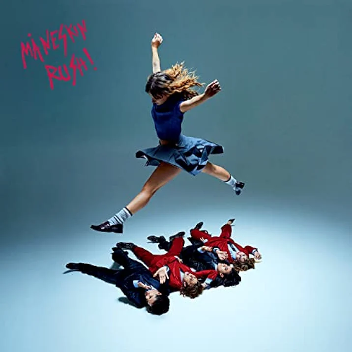
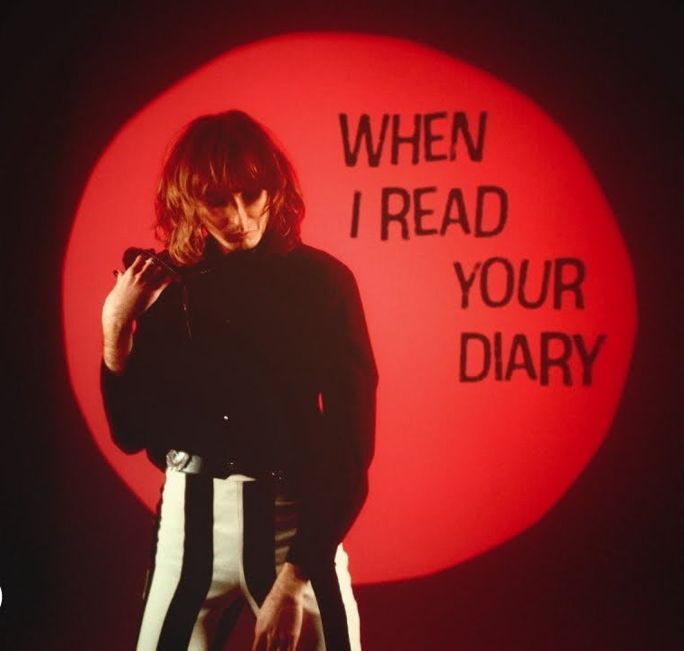
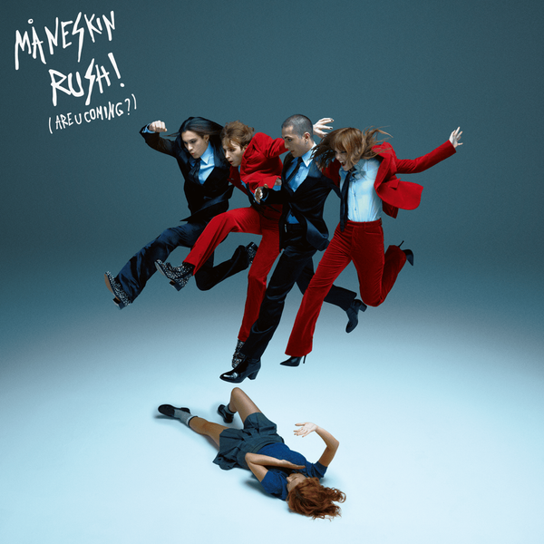

|
 |
BABY SAID
Rush! - 2023 La canción 'BABY SAID' de Måneskin se sumerge en la complejidad de las relaciones modernas, donde la comunicación y el deseo físico a menudo entran en conflicto. |
|
SOMEBODY TOLD ME
Chosen - 2017 La letra habla de un individuo que está desesperado por conocer a alguien, pero se encuentra atrapado en un ciclo de rumores y apariencias que complican su percepción de la realidad. |
|
 |
READ YOUR DIARY
Rush! - 2023 La canción 'READ YOUR DIARY' de Måneskin se sumerge en las profundidades de la obsesión y el deseo de una intimidad extrema. La letra describe el anhelo de un individuo por conocer completamente a otra persona, hasta el punto de invadir su privacidad. Las metáforas utilizadas, como 'leer tu diario' y 'bailar en tus zapatos', simbolizan el intento de adentrarse en la mente y la vida de alguien más, buscando comprender sus pensamientos y experiencias más íntimos. |
|
 |
THE DRIVER
Rush! - 2023 La letra nos sumerge en una narrativa donde el amor y la intensidad de vivir el momento son protagonistas, utilizando metáforas vehiculares para expresar la necesidad de ser el motor de la propia vida y de las experiencias que se desean vivir. |
|
RECOVERY
Chosen - 2017 La letra refleja la travesía de un individuo que, a pesar de las adversidades y la soledad, se mantiene firme en su camino hacia la recuperación y la libertad personal. La repetición de 'I won't slow down' enfatiza la determinación del protagonista de no detenerse ante los obstáculos. |